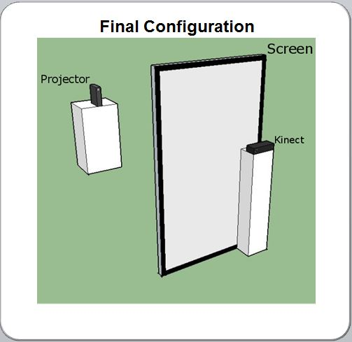

Introduction
The Augmented Reality Mirror is an open source rendering software to provide users with a virtual reality experience. With the provisions of a projection display, a laptop with multi-core GPU, and XBOX kinect v2, users can stand in front of the mirror and representative anatomical images will overlay the body. The images implemented are adapted to approximate the actual anatomy. The open source software will have an application programming interface (API) to allow users to develop additional content within the Augmented Reality Mirror
The team consisted of Yuang Yao, another undergraduate student, two high school interns, Sharo Hawrami and Ramilia Li, and our advisor Dr. Landman.
From left to right: Sharo Hawrami, Chris Lee, Yuang Yao, Remilia LiDesign
Throughout the year I worked on this project, I worked with setting up the physical architecture of the Augmented Reality Mirror, testing the capabilities of the kinect v2, and constructing a calibration system and simple abdominal organ game. Since my team was laying the foundation for the AR mirror, it was imperative that the design of the physical architecture was intuitive, simple, and performed as much like a mirror as possible. As for the software, we tested the kinects five data streams that arrived through the kinect's three sensors: IR sensor, depth sensor, and RGB camera. From this we were able to design and build a simple game. The five kinect data streams from the kinect's three sensors: IR sensor, depth sensor, and RGB camera.
Design Requirements
- 1980x1080 projector
- High quality image display
- Rear projection screen
- Creates illusion of a mirror
- PC with following specifications
- Multicore Central Processing Unit (CPU)
- Multicore Graphical Processing Unit (GPU)
- x64 System
- 4+ gigabytes of Random Acess Memory (RAM)
Physical Configuration
While working to design the best set up for the augmented reality mirror, we ran into many constraints. Constraints included mimimizing the total area of the configuration, a configuration that could work for people of all sizes, and in a way that the hardware could work in conjunction with the sotware, all while creating the most realisitc experience.
 The final configuration of the augmented reality mirror.System configuration
- 1980x1080 projector
- 11ft behind rear project screen
- Placed on side to change dimensions to 1080x1980
- Rear projection screen
- Placed on side giving the screen dimensions of 56inx96in
- Kinect v2
- 1ft from the right side of the screen
- 9in in front of th screen
- 54in off the ground
Software
The software written was in C# and XML, and can be found at the link at the bottom of the page. We initally explored the manipulation of the different data streams, and then created a basic game and system calibration. The software life cycle required us to modify the display to the constraints of the sideways projector.
The software cycle MASI - Augmented Reality Mirror: Calibration & Game
Conclusion and Future Work
My team and I laid the foundation for future work with the augmented reality mirror. We explored the functionality and limitations of the Kinect v2, projector, and screen. In doing so, we designed a basic game and the physical architecture of the system. Our hope is that the augmented reality mirror can be implemented in schools as a cheap and fun educational tool. Our work has been picked up by new talent in the lab since our team has graduated, and our two high school interns moved on to their respective colleges.
Project Links: AR Mirror | MASI Lab